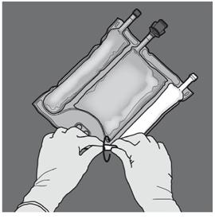

RÉSUMÉ DES CARACTÉRISTIQUES DU PRODUIT
ANSM - Mis à jour le : 27/06/2014
Ce médicament fait l’objet d’une surveillance supplémentaire qui permettra l’identification rapide de nouvelles informations relatives à la sécurité. Les professionnels de la santé déclarent tout effet indésirable suspecté. Voir rubrique 4.8 pour les modalités de déclaration des effets indésirables.
NUMETAH G16%E, émulsion pour perfusion
2. COMPOSITION QUALITATIVE ET QUANTITATIVE
|
Volume de la poche |
Solution de glucose à 50 % |
Solution d'acides aminés à 5,9 % contenant des électrolytes |
Emulsion lipidique à 12,5 % |
|
500 ml |
155 ml |
221 ml |
124 ml |
Si l'administration de lipides n'est pas souhaitable, la conception de la poche permet d'ouvrir uniquement la soudure non permanente séparant les compartiments d'acides aminés/électrolytes et la solution de glucose, tout en gardant intacte la soudure séparant les compartiments d'acides aminés et de l'émulsion lipidique. Le contenu de la poche peut donc être perfusé avec ou sans lipides.
La composition du médicament, après avoir mélangé le contenu des deux compartiments (acides aminés et glucose, 2 compartiments, 376 ml de solution) ou trois compartiments (acides aminés, glucose et lipides, 3 compartiments, 500 ml d'émulsion) est présentée dans le tableau suivant.
|
Composition |
||
|
Substance active |
2 CP* ouverts |
3 CP** ouverts |
|
|
(376 ml) |
(500 ml) |
|
Compartiment des Acides Aminés |
||
|
Alanine |
1,03 g |
1,03 g |
|
Arginine |
1,08 g |
1,08 g |
|
Acide aspartique |
0,77 g |
0,77 g |
|
Cystéine |
0,24 g |
0,24 g |
|
Acide glutamique |
1,29 g |
1,29 g |
|
Glycine |
0,51 g |
0,51 g |
|
Histidine |
0,49 g |
0,49 g |
|
Isoleucine |
0,86 g |
0,86 g |
|
Leucine |
1,29 g |
1,29 g |
|
Lysine Monohydratée |
1,59 g |
1,59 g |
|
équivalent à Lysine : |
(1,42 g) |
(1,42 g) |
|
Méthionine |
0,31 g |
0,31 g |
|
Chlorhydrate d'ornithine |
0,41 g |
0,41 g |
|
équivalent à Ornithine : |
(0,32 g) |
(0,32 g) |
|
Phénylalanine |
0,54 g |
0,54 g |
|
Proline |
0,39 g |
0,39 g |
|
Sérine |
0,51 g |
0,51 g |
|
Taurine |
0,08 g |
0,08 g |
|
Thréonine |
0,48 g |
0,48 g |
|
Tryptophane |
0,26 g |
0,26 g |
|
Tyrosine |
0,10 g |
0,10 g |
|
Valine |
0,98 g |
0,98 g |
|
Chlorure de sodium |
0,30 g |
0,30 g |
|
Acétate de potassium |
1,12 g |
1,12 g |
|
Chlorure de calcium, dihydraté |
0,46 g |
0,46 g |
|
Acétate de magnésium, tétrahydraté |
0,33 g |
0,33 g |
|
Glycérophosphate de sodium hydraté |
0,98 g |
0,98 g |
|
Compartiment de la solution de glucose |
||
|
Glucose monohydrate |
85,25 g |
85,25 g |
|
équivalent à glucose anhydre : |
(77,50 g) |
(77,50 g) |
|
Compartiment de l’émulsion lipidique |
||
|
Huile d’olive raffinée (environ 80 %) + huile de soja raffinée (environ 20 %) |
- |
15,5 g |
*2 CP = deux compartiments de la poche, **3 CP = trois compartiments de la poche.
Pour la liste complète des excipients, voir rubrique 6.1.
Les apports de l'émulsion/la solution reconstituée sont les suivants :
|
Composition |
||||
|
|
2 CP ouverts |
3 CP ouverts |
||
|
Par unité de volume |
376 ml |
100 ml |
500 ml |
100 ml |
|
Azote (g) |
2 |
0,52 |
2 |
0,39 |
|
Acides aminés (g) |
13 |
3,4 |
13 |
2,6 |
|
Glucose (g) |
77,5 |
20,6 |
77,5 |
15,5 |
|
Lipides (g) |
0 |
0 |
15,5 |
3,1 |
|
Energie |
|
|
|
|
|
Calories totales (kcal) |
360 |
96 |
515 |
103 |
|
Calories non protéiques (kcal) |
310 |
82 |
465 |
93 |
|
Calories glucidiques (kcal) |
310 |
82 |
310 |
62 |
|
Calories lipidiques (kcal)(1) |
0 |
0 |
155 |
31 |
|
Ratio calories non protéiques/azote (kcal/g N) |
159 |
159 |
238 |
238 |
|
Ratio calories lipidiques/calories non protéiques (%) |
- |
- |
33 |
33 |
|
Ratio calories lipidiques/calories totales (%) |
- |
- |
30 |
30 |
|
Electrolytes |
|
|
|
|
|
Sodium (mmol) |
11,6 |
3,1 |
12 |
2,4 |
|
Potassium (mmol) |
11,4 |
3 |
11,4 |
2,3 |
|
Magnésium (mmol) |
1,6 |
0,41 |
1,6 |
0,31 |
|
Calcium (mmol) |
3,1 |
0,82 |
3,1 |
0,62 |
|
Phosphate (mmol)(2) |
3,2 |
0,85 |
4,4 |
0,87 |
|
Acétate (mmol) |
14,5 |
3,9 |
14,5 |
2,9 |
|
Malate (mmol) |
4,3 |
1,1 |
4,3 |
0,9 |
|
Chlorure (mmol) |
14 |
3,7 |
14 |
2,8 |
|
pH (env.) |
5,5 |
5,5 |
5,5 |
5,5 |
|
Osmolarité env. (mOsm/l) |
1 585 |
1 585 |
1 230 |
1 230 |
(1)Incluant les calories des phosphatides d'œuf.
(2)Incluant les phosphates apportés par les phosphatides d'œuf de l'émulsion lipidique.
Aspect avant reconstitution :
· les solutions des compartiments d'acides aminés et de glucose sont limpides, incolores ou jaune pâle;
· l'émulsion lipidique est homogène et d'aspect blanc laiteux.
4.1. Indications thérapeutiques
4.2. Posologie et mode d'administration
La posologie dépend de la dépense énergétique, du poids, de l'âge, de l'état clinique du patient, et de sa capacité à métaboliser les constituants de NUMETAH, ainsi que du supplément d'énergie ou de protéines administré par voie orale/entérale. La concentration totale en électrolytes et en macronutriments varie selon le nombre de compartiments ouverts (voir rubrique 2).
Le débit de perfusion par heure et le volume journalier maximal recommandés varient en fonction du constituant. Si les limites du débit de perfusion ou du volume sont atteintes, cela définit la dose journalière maximale. Les recommandations concernant le débit de perfusion par heure et le volume journalier maximal sont les suivantes :
|
|
2 CP ouverts (376 ml) |
3 CP ouverts (500 ml) |
|
Débit de perfusion maximal en ml/kg/h |
5,8 |
5,5 |
|
Correspondant à : |
|
|
|
Acides aminés en g/kg/h |
0,20* |
0,14 |
|
Glucose en g/kg/h |
1,2 |
0,85 |
|
Lipides en g/kg/h |
0 |
0,17* |
|
Volume maximal en ml/kg/jour |
72,3 |
96,2 |
|
Correspondant à : |
|
|
|
Acides aminés en g/kg/j |
2,5* |
2,5* |
|
Glucose en g/kg/j |
14,9 |
14,9 |
|
Lipides en g/kg/j |
0 |
3,0 |
* Limites conformément aux recommandations de l'ESPEN et de l'ESPGHAN
Mode d’administration
Pour les instructions concernant la préparation et la manipulation de l'émulsion/la solution pour perfusion, voir la rubrique 6.6.
En raison de son osmolarité élevée, NUMETAH non dilué peut être uniquement administré par une veine centrale. Néanmoins, une dilution suffisante de NUMETAH avec de l'eau pour préparations injectables réduit l'osmolarité et permet une perfusion par une veine périphérique. Le tableau suivant indique l'effet de la dilution sur l'osmolarité des poches.
Exemples d'osmolarité des mélanges avec 2 CP et 3 CP ouverts après ajout d'oligo-éléments, de vitamines et d'eau pour préparations injectables :
|
|
Acides aminés et glucose (2 CP ouverts) |
Acides aminés, glucose et lipides (3 CP ouverts) |
|
Volume initial dans la poche (ml) |
376 |
500 |
|
Osmolarité initiale (mOsm/l env.) |
1 585 |
1 230 |
|
Volume d'eau ajouté (ml) |
450 |
350 |
|
Oligo-éléments ajoutés* |
5 ml OE2 |
5 ml OE2 |
|
Vitamines ajoutées* |
½ flacon V1 |
½ flacon V1+ ½ flacon V2 |
|
Volume final après ajout (ml) |
836 |
860 |
|
Osmolarité après ajout (mOsm/l env.) |
715 |
715 |
* La composition des préparations de vitamines et d'oligo-éléments est décrite ci-dessous.
Composition de la préparation commerciale d'oligo-éléments utilisée
|
Composition par flacon |
OE2 (10 ml) |
|
Fer |
8,9 µmol ou 0,5 mg |
|
Zinc |
15,3 µmol ou 1 mg |
|
Sélénium |
0,6 µmol ou 0,05 mg |
|
Cuivre |
4,7 µmol ou 0,3 mg |
|
Iode |
0,4 µmol ou 0,05 mg |
|
Fluor |
26,3 µmol ou 0,5 mg |
|
Molybdène |
0,5 µmol ou 0,05 mg |
|
Manganèse |
1,8 µmol ou 0,1 mg |
|
Cobalt |
2,5 µmol ou 0,15 mg |
|
Chrome |
0,4 µmol ou 0,02 mg |
Composition de la préparation commerciale de vitamines utilisée
|
Composition par flacon |
V1 |
V2 |
|
Vitamine B1 |
2,5 mg |
- |
|
Vitamine B2 |
3,6 mg |
- |
|
Nicotinamide |
40 mg |
- |
|
Vitamine B6 |
4,0 mg |
- |
|
Acide pantothénique |
15,0 mg |
- |
|
Biotine |
60 µg |
- |
|
Acide folique |
400 µg |
- |
|
Vitamine B12 |
5,0 µg |
- |
|
Vitamine C |
100 mg |
- |
|
Vitamine A |
- |
2 300 UI |
|
Vitamine D |
- |
400 UI |
|
Vitamine E |
- |
7 UI |
|
Vitamine K |
- |
200 µg |
Le débit doit être augmenté progressivement au cours de la première heure. Lors de l’arrêt de NUMETAH, le débit doit être diminué progressivement au cours de la dernière heure. Le débit d'administration doit être ajusté en fonction de la dose à administrer, de l'apport volumique journalier et de la durée de la perfusion, voir rubrique 4.9.
Une même poche ne doit pas être ouverte, suspendue et administrée pendant plus de 24 heures. Les perfusions cycliques doivent être gérées en fonction de la tolérance métabolique du patient.
La nutrition parentérale peut être poursuivie aussi longtemps que l'état clinique du patient l'exige.
Ce produit contient des électrolytes et peut ensuite être supplémenté par des préparations commerciales d’électrolytes, selon l’appréciation du médecin et en fonction des besoins cliniques du patient, voir rubrique 6.6.
Des vitamines et des oligo-éléments peuvent être ajoutés selon l’appréciation du médecin et en fonction des besoins cliniques du patient, voir rubrique 6.6.
· hypersensibilité à l’œuf, aux protéines de soja ou d’arachide, à l'une des substances actives, aux excipients mentionnés à la rubrique 6.1 ou aux composants de la poche,
· anomalie congénitale du métabolisme des acides aminés,
· concentrations plasmatiques élevées et pathologiques en sodium, potassium, magnésium, calcium et/ou phosphore,
· traitement concomitant par ceftriaxone chez les nouveau-nés (âgés de moins de 28 jours) même si des lignes de perfusion séparées sont utilisées, voir rubriques 4.5 et 6.2,
· hyperglycémie sévère.
L'ajout de lipides (administration intraveineuse de NUMETAH en poche à 3 compartiments ouverts) est contre-indiqué dans les situations cliniques supplémentaires suivantes :
· hyperlipidémie sévère ou troubles importants du métabolisme lipidique caractérisés par une hypertriglycéridémie.
4.4. Mises en garde spéciales et précautions d'emploi
Aucune solution ne peut être ajoutée à la poche sans en vérifier préalablement la compatibilité, étant donné que la formation de précipités ou la déstabilisation de l'émulsion lipidique peut entraîner une occlusion vasculaire (voir rubriques 6.2 et 6.6).
Une infection et une septicémie peuvent survenir en cas d'utilisation de cathéters intraveineux pour l'administration de formules parentérales ou en cas d'entretien défectueux des cathéters. Les effets immunosuppresseurs de certaines maladies ou de certains médicaments peuvent accroître le risque d'infection et de septicémie. Une surveillance clinique étroite et la réalisation d'examens de laboratoire afin de contrôler la survenue de fièvre/frissons, de leucocytose, de complications techniques liées au dispositif d'accès et d'hyperglycémie peuvent contribuer à une détection rapide des infections. Les patients qui nécessitent une nutrition parentérale sont souvent prédisposés à des complications infectieuses dues à la malnutrition et/ou à leur pathologie sous-jacente. Le risque de complications septiques peut être réduit en insistant sur l'utilisation d'une technique aseptique lors du positionnement et de l'entretien du cathéter, ainsi que lors de la préparation de la formule nutritionnelle.
Un syndrome de surcharge graisseuse a été rapporté avec des produits similaires. Une diminution de la capacité d’élimination des lipides contenus dans NUMETAH peut conduire à un « syndrome de surcharge graisseuse ».
La réalimentation de patients fortement dénutris peut entraîner l'apparition du syndrome de réalimentation, caractérisé par une modification de la répartition intracellulaire du potassium, du phosphore et du magnésium lors de la phase d'anabolisme. Un déficit en thiamine et une rétention d'eau peuvent également se développer. Il est recommandé de commencer la nutrition parentérale lentement et avec précaution, en surveillant attentivement le bilan hydrique, les électrolytes, les oligo-éléments et les vitamines.
NUMETAH doit uniquement être administré par une veine centrale sauf si une dilution suffisante est effectuée (voir rubrique 4.2). En cas de supplémentation de la formulation, l'osmolarité du mélange final doit être mesurée avant administration par une veine périphérique afin d'éviter toute irritation veineuse.
Ne pas connecter les poches en série afin d’éviter tout risque d’embolie gazeuse due à l’air résiduel contenu dans la première poche.
Les lipides, les vitamines, les apports en électrolytes supplémentaires et les oligo-éléments doivent être administrés selon les besoins.
Précautions d’emploi
Ne pas ajouter d'autres médicaments ou substances à l'un des 3 compartiments de la poche, ou à la solution ou à l'émulsion reconstituée sans avoir au préalable vérifié la compatibilité et la stabilité de la préparation obtenue (en particulier la stabilité de l'émulsion lipidique) (voir rubriques 6.2 et 6.6).
L'équilibre hydroélectrolytique, l'osmolarité sérique, les concentrations sériques en triglycérides, l'équilibre acido-basique, la glycémie, les analyses de la fonction hépatique et rénale, l'hémogramme, y compris la numération des plaquettes et les facteurs de coagulation, doivent être régulièrement contrôlés pendant toute la durée du traitement.
En cas d'états instables (par exemple, après des états post-traumatiques graves, un diabète décompensé, la phase aiguë d'un choc circulatoire, la phase aiguë d'un infarctus du myocarde, une acidose métabolique grave, une septicémie sévère et un coma hyperosmolaire), l'administration de NUMETAH doit faire l'objet d'une surveillance et d'un ajustement selon les besoins cliniques du patient.
Affections cardiovasculaires
A utiliser avec prudence chez les patients souffrant d'œdème pulmonaire ou d'insuffisance cardiaque. Le bilan hydrique doit être surveillé attentivement chez ces patients.
Affections rénales
A utiliser avec précaution chez les patients souffrant d'insuffisance rénale. Le bilan hydroélectrolytique incluant le taux de magnésium (voir Hypermagnésémie) doit être étroitement surveillé chez ces patients.
Les troubles sévères de l'équilibre hydroélectrolytique, les surcharges importantes de liquides et les troubles métaboliques sévères doivent être corrigés avant le début de la perfusion (voir rubrique 4.3 Contre-indications).
Affections hépatiques/gastro-intestinales
A utiliser avec prudence chez les patients atteints d'insuffisance hépatique sévère, notamment de cholestase ou présentant une augmentation des enzymes hépatiques. La fonction hépatique doit être surveillée attentivement.
Affections endocriniennes et troubles du métabolisme
Des complications métaboliques peuvent survenir si l'apport de nutriments n'est pas adapté aux besoins du patient ou si la capacité métabolique pour un composant alimentaire donné n'a pas été évaluée avec précision. Des effets métaboliques indésirables peuvent résulter de l'administration de nutriments inadéquats ou en trop grande quantité ou de la composition inappropriée d'un mélange, compte-tenu des besoins spécifiques du patient.
Les concentrations sériques en triglycérides et la capacité de l'organisme à métaboliser les lipides doivent être régulièrement surveillées. En cas de suspicion de troubles du métabolisme lipidique, il est recommandé de mesurer la concentration sérique en triglycérides si cela est cliniquement nécessaire.
En cas d'hyperglycémie, le débit de perfusion de NUMETAH doit être ajusté et/ou de l'insuline doit être administrée, voir rubrique 4.9.
Affections hématologiques
A utiliser avec prudence chez les patients souffrant de troubles graves de la coagulation. L'hémogramme et les facteurs de coagulation doivent être surveillés attentivement.
Hypermagnésémie
NUMETAH G16%E apporte 0,3 mmol/kg/j de magnésium en cas d'administration de la dose maximale (voir rubrique 4.2). Il est possible que cela entraîne une hypermagnésémie. Les signes d'hypermagnésémie englobent une faiblesse généralisée, une hyporéflexie, des nausées, des vomissements, une hypocalcémie, une défaillance respiratoire, une hypotension et des arythmies. Les signes d'hypermagnésémie pouvant passer inaperçus, il est recommandé de contrôler le taux de magnésium en début de traitement puis à intervalles appropriés par la suite, conformément aux pratiques cliniques habituelles et en fonction des besoins du patient. Cela est particulièrement important chez les patients présentant un risque accru d'hypermagnésémie, notamment les patients atteints de troubles de la fonction rénale, sous traitement par d'autres médicaments entraînant un risque d'hypermagnésémie ou recevant du magnésium provenant d'autres sources, y compris chez les nouveau-nés dont la mère a récemment reçu du magnésium pendant la période ante-partum.
Si la concentration sérique en magnésium est élevée (supérieure aux valeurs normales de référence), la perfusion de NUMETAH G16%E doit être interrompue ou sa vitesse réduite selon l'évaluation clinique et les critères de sécurité.
4.5. Interactions avec d'autres médicaments et autres formes d'interactions
Aucune étude d'interaction pharmacodynamique n'a été réalisée avec NUMETAH.
NUMETAH ne doit pas être administré simultanément avec du sang par la même tubulure de perfusion en raison du risque de pseudo-agglutination.
Comme pour les autres solutions pour perfusion contenant du calcium, un traitement concomitant par ceftriaxone et NUMETAH est contre-indiqué chez les nouveau-nés (âgés de moins de 28 jours), même si des lignes de perfusion séparées sont utilisées (risque de décès dû à la précipitation de sel calcique de ceftriaxone dans la circulation sanguine du nouveau-né). Chez les patients âgés de plus de 28 jours (y compris les adultes), la ceftriaxone ne doit pas être co-administrée avec des solutions intraveineuses contenant du calcium en utilisant la même tubulure de perfusion (par exemple un connecteur en Y).
Si la même tubulure est utilisée pour une administration séquentielle, elle doit être rincée minutieusement entre les deux perfusions.
L'huile d'olive et l'huile de soja possèdent une teneur naturelle en vitamine K1 susceptible d'entraver l'activité anticoagulante de la coumarine (ou de dérivés de la coumarine tels que la warfarine).
En raison de la teneur en potassium de NUMETAH, il convient d'être particulièrement attentif aux patients traités simultanément avec un diurétique d'épargne potassique (amiloride, spironolactone, triamtérène), des inhibiteurs de l'enzyme de conversion (IEC), des antagonistes du récepteur de l'angiotensine II ou des immunosuppresseurs (tacrolimus ou cyclosporine) en raison du risque d'hyperkaliémie.
Les lipides contenus dans cette émulsion peuvent interférer avec les résultats de certains examens de laboratoire (par exemple, bilirubine, lactate déshydrogénase, saturation du sang en oxygène, hémoglobine sanguine) si le prélèvement sanguin a été réalisé avant l'élimination des lipides. Ceux-ci sont normalement éliminés après une période de 5 à 6 heures sans apport de lipides.
Voir également la rubrique 6.2 « Incompatibilités ».
4.7. Effets sur l'aptitude à conduire des véhicules et à utiliser des machines
Le tableau suivant résume les effets indésirables constatés dans cette étude.
|
Effets indésirables lors de l'essai clinique |
||
|
Classes de systèmes d'organes |
Fréquence** |
Termes préférentiels MedDRA |
|
Troubles du métabolisme et de la nutrition |
Fréquent Fréquent Fréquent Fréquent Peu fréquent Fréquent |
Hypophosphatémie* Hyperglycémie* Hypercalcémie* Hypertriglycéridémie* Hyperlipidémie Hyponatrémie* |
|
Affections hépatobiliaires |
Peu fréquent |
Cholestase |
* Prélèvements sanguins effectués pendant la perfusion (sans jeûne).
** L’évaluation de la fréquence se base sur les catégories suivantes : très fréquent (≥1/10), fréquent (≥1/100 à <1/10), peu fréquent (≥1/1 000 à <1/100), rare (≥1/10 000 à <1/1 000), très rare (<1/10 000).
Syndrome de surcharge graisseuse : peut survenir en cas d’administration non appropriée (par exemple, un surdosage et/ou un débit de perfusion plus rapide que celui recommandé, voir rubrique 4.9) ; cependant, les signes et les symptômes de ce syndrome peuvent également survenir lorsque le produit est administré conformément aux instructions. La diminution de la capacité à métaboliser les lipides contenus dans NUMETAH associée à une clairance plasmatique prolongée peut provoquer un « syndrome de surcharge graisseuse ». Ce syndrome s'accompagne d'une brusque altération de l'état clinique du patient et se caractérise par des signes tels qu’une hyperlipidémie, de la fièvre, une stéatose hépatique (hépatomégalie), une détérioration de la fonction hépatique, une anémie, une leucopénie, une thrombocytopénie, des troubles de la coagulation et des manifestations du système nerveux central (par exemple, un coma). Ce syndrome est généralement réversible après l'arrêt de la perfusion de l'émulsion lipidique.
Déclaration des effets indésirables suspectés
La déclaration des effets indésirables suspectés après autorisation du médicament est importante. Elle permet une surveillance continue du rapport bénéfice/risque du médicament. Les professionnels de santé doivent déclarer tout effet indésirable suspecté via le système national de déclaration : Agence nationale de sécurité du médicament et des produits de santé (ANSM) et réseau des Centres Régionaux de Pharmacovigilance. Site internet : www.ansm.sante.fr.
Une hyperglycémie, une glycosurie et un syndrome hyperosmolaire peuvent se manifester si la vitesse de perfusion du glucose dépasse la clairance.
La diminution de la capacité à métaboliser des lipides peut entraîner un « syndrome de surcharge graisseuse », dont les effets sont généralement réversibles après l'arrêt de la perfusion de l’émulsion lipidique, voir également rubrique 4.8.
Il n'existe pas d’antidote spécifique pour le surdosage en NUMETAH. Les procédures d'urgence doivent être des mesures générales de soutien, principalement axées sur les systèmes respiratoire et cardiovasculaire. Dans quelques cas graves, une hémodialyse, une hémofiltration ou une hémodiafiltration peuvent être nécessaires.
Une surveillance étroite des paramètres biochimiques est indispensable et les anomalies particulières doivent être prises en charge de façon appropriée.
5. PROPRIETES PHARMACOLOGIQUES
5.1. Propriétés pharmacodynamiques
Classe pharmacothérapeutique: solutions pour nutrition parentérale/mélanges.
Code ATC: B05BA10.
La teneur en azote (20 acides aminés de la série L, dont 8 acides aminés essentiels) et la valeur énergétique (glucose et triglycérides) de NUMETAH permettent de maintenir un équilibre azote/énergie adéquat. L'azote et l'énergie sont nécessaires au fonctionnement normal de toutes les cellules de l'organisme et jouent un rôle important dans la synthèse protéique, la croissance, la cicatrisation, la fonction immunitaire, la fonction musculaire et de nombreuses autres activités cellulaires.
Cette formule contient aussi des électrolytes.
Le profil des acides aminés se définit comme suit :
· Acides aminés essentiels/acides aminés totaux: 47,5 %.
· Acides aminés à chaîne ramifiée/acides aminés totaux: 24,0 %.
L'émulsion lipidique contenue dans NUMETAH est un mélange d'huile d'olive raffinée et d'huile de soja raffinée (ratio d'environ 80/20), dont la répartition relative en acides gras est la suivante :
· 15 % d'acides gras saturés (AGS),
· 65 % d'acides gras mono-insaturés (AGMI),
· 20 % d'acides gras polyinsaturés (AGPI).
Le ratio phospholipides/triglycérides est de 0,06. La teneur modérée en acides gras essentiels (AGE) améliore le statut de leurs dérivés supérieurs tout en corrigeant une déficience en AGE.
L'huile d'olive contient une quantité significative d'alpha-tocophérol qui, combiné à un apport modéré en AGPI, contribue à améliorer le statut en vitamine E et joue un rôle important pour limiter la peroxydation lipidique.
Le glucose est la source d'hydrate de carbone. Le glucose est une source d'énergie essentielle dans l'organisme.
5.2. Propriétés pharmacocinétiques
5.3. Données de sécurité préclinique
Aucune étude sur les animaux n'a été menée avec NUMETAH (deux ou trois compartiments ouverts).
|
Compartiment des acides aminés |
Compartiment de la solution de glucose |
Compartiment de l'émulsion lipidique |
|
|
Acide L malique (1) |
X |
- |
- |
|
Acide chlorhydrique (1) |
- |
X |
- |
|
Phosphatide d'œuf purifié |
- |
- |
X |
|
Glycérol |
- |
- |
X |
|
Oléate de Sodium |
- |
- |
X |
|
Hydroxyde de sodium(1) |
- |
- |
X |
|
Eau pour préparations injectables |
X |
X |
X |
(1)Pour l'ajustement du pH.
Comme avec tous les mélanges pour nutrition parentérale, il convient de tenir compte des taux de calcium et de phosphate. Un ajout excessif de calcium et de phosphate, en particulier sous forme de sels minéraux, peut entraîner la formation de précipités de phosphate de calcium.
Comme pour les autres solutions pour perfusion contenant du calcium, un traitement concomitant par ceftriaxone et NUMETAH est contre-indiqué chez les nouveau-nés (âgés de moins de 28 jours), même si des lignes de perfusion séparées sont utilisées (risque de décès dû à la précipitation de sel calcique de ceftriaxone dans la circulation sanguine du nouveau-né) (voir rubrique 4.5).
Chez les patients âgés de plus de 28 jours (y compris les adultes), la ceftriaxone ne doit pas être co-administrée avec des solutions intraveineuses contenant du calcium en utilisant la même tubulure de perfusion (par exemple un connecteur en Y).
Si la même tubulure est utilisée pour une administration séquentielle, elle doit être rincée minutieusement entre les deux perfusions.
NUMETAH ne doit pas être administré simultanément avec du sang par la même tubulure de perfusion, voir rubrique 4.5.
NUMETAH contient des ions calcium qui entraînent un risque supplémentaire de coagulation avec formation de précipité dans le sang ou des éléments anticoagulés/préservés au citrate.
Durée de conservation après reconstitution
Il est recommandé d'utiliser le produit immédiatement après ouverture des soudures non permanentes situées entre les deux ou trois compartiments. Toutefois, une fois reconstituée, la stabilité du mélange a été démontrée pendant 7 jours entre 2°C et 8°C, suivis de 48 heures à 30°C.
Durée de conservation après supplémentation
Après l'ajout d'électrolytes, d'oligo-éléments et de vitamines aux mélanges avec 2 CP et 3 CP ouverts, avec et sans dilution, la stabilité en cours d'utilisation a été démontrée pendant 7 jours, entre 2°C et 8°C, suivis de 48 heures à 30°C.
Toutefois, du point de vue microbiologique, le produit après mélange doit être utilisé immédiatement. En cas d'utilisation non immédiate, les durées et conditions de conservation, après mélange et avant utilisation, relèvent de la seule responsabilité de l'utilisateur et ne devraient pas dépasser 24 heures à une température comprise entre 2°C et 8°C, sauf si la reconstitution/la dilution/la supplémentation a été réalisée dans des conditions d'asepsie dûment contrôlées et validées.
Voir la rubrique 4.2 «Posologie et mode d'administration» et la rubrique 6.6 «Précautions particulières d'élimination et de manipulation».
6.4. Précautions particulières de conservation
A conserver dans le suremballage.
6.5. Nature et contenu de l'emballage extérieur
La poche à trois compartiments sans PVC comporte les composants suivants :
· Une feuille en plastique multicouche.
· Un embout sur le compartiment contenant l'émulsion lipidique. Il est scellé après le remplissage pour empêcher tout ajout dans ce compartiment.
· Deux embouts sur les compartiments de solution d'acides aminés et de solution de glucose.
o Un embout d'injection qui ferme la sortie du compartiment de glucose.
o Un embout d'administration qui ferme la sortie du compartiment d'acides aminés.
Tous les composants sont sans latex naturel.
Pour empêcher tout contact avec l'air, la poche est conditionnée dans un suremballage étanche à l’oxygène qui contient un sachet absorbeur d'oxygène et éventuellement un indicateur d'oxygène.
Présentations disponibles :
Poches de 500 ml : 6 unités par carton
1 poche de 300 ml/500 ml/1000 ml.
Toutes les présentations peuvent ne pas être commercialisées.
6.6. Précautions particulières d’élimination et de manipulation
A usage unique.
Ne pas connecter les poches en série afin d'éviter une embolie gazeuse due à l'air résiduel éventuellement contenu dans la première poche.
Vérifier l'intégrité de la poche et des soudures non permanentes. Utiliser uniquement si la poche n'est pas endommagée, si les soudures non permanentes sont intactes (c'est à dire qu'il n'y a pas de mélange des contenus des trois compartiments), si la solution d'acides aminés et la solution de glucose sont limpides, incolores ou jaune pâle, pratiquement exemptes de particules visibles et si l'émulsion lipidique est un liquide homogène d'aspect laiteux.
Avant d'ouvrir le suremballage, contrôler la couleur de l'indicateur d'oxygène, si celui-ci est présent. Le comparer à la couleur de référence imprimée à côté du symbole OK et illustrée dans la zone imprimée de l'étiquette de l'indicateur. Ne pas utiliser le produit si la couleur de l'indicateur d'oxygène ne correspond pas à la couleur de référence imprimée à côté du symbole OK.
Pour ouvrir: Retirer le suremballage de protection. Jeter le suremballage et le sachet absorbeur/indicateur d'oxygène, si celui-ci est présent.
Mélange: S'assurer que le produit est à température ambiante avant de rompre les soudures non permanentes. Placer la poche sur une surface plane et propre. Ne pas utiliser si le contenu de la poche est mélangé suite à une rupture accidentelle des soudures des compartiments pendant le transport.
Ouverture des 3 CP (ouverture des deux soudures non permanentes)
Enrouler la poche depuis le coin du compartiment de l'émulsion lipidique comportant l'œillet.

Exercer une pression pour ouvrir la première soudure.
Continuer à enrouler la poche vers les embouts et exercer une pression pour ouvrir la deuxième soudure.
Toutes les soudures doivent être entièrement ouvertes en exerçant une pression continue d'une main tout en enroulant la poche vers les embouts.
Ensuite, enrouler la poche dans la direction opposée.
Retourner la poche au moins trois fois pour bien mélanger son contenu. Le mélange doit avoir l'aspect d'une émulsion d'un blanc laiteux.
Retirer le protecteur du site d'administration et insérer le dispositif d'administration intraveineux.
Ouverture des 2 CP (ouverture de la soudure non permanente entre les compartiments d'acides aminés et de glucose)
Pour n'ouvrir que la soudure pelable séparant les compartiments d'acides aminés et de glucose, enrouler la poche depuis le coin de la soudure séparant les compartiments d'acides aminés et de glucose comportant l'œillet et exercer une pression pour ouvrir cette soudure.
Orienter la poche de manière à ce que le compartiment de l'émulsion lipidique se trouve du côté de l'opérateur et l'enrouler tout en protégeant le compartiment de l'émulsion lipidique à l'aide des paumes des mains.
D'une main, exercer une pression en enroulant la poche vers les embouts.
Changer ensuite de direction en enroulant la poche vers l'œillet, tout en appuyant de l'autre main, jusqu'à ce que la soudure séparant les solutions d'acides aminés et de glucose soit entièrement ouverte.
Retourner la poche au moins trois fois pour bien mélanger son contenu. La solution mélangée doit être limpide, incolore ou jaune pâle.
Retirer le protecteur du site d'administration et insérer le dispositif d'administration intraveineux.
Supplémentations: La capacité de la poche est suffisante pour permettre des supplémentations telles que des électrolytes, des oligo-éléments, des vitamines et de l'eau pour préparations injectables. Toute supplémentation (y compris de vitamines) peut être faite dans le mélange reconstitué (après ouverture des soudures non permanentes et mélange du contenu des deux ou trois compartiments). Des vitamines peuvent également être ajoutées au compartiment de glucose avant reconstitution du mélange (avant ouverture des soudures non permanentes et avant mélange des solutions et de l'émulsion).
Lors de la réalisation des supplémentations, la quantité d'électrolytes déjà présente dans la poche doit être prise en compte de manière à répondre aux besoins cliniques du patient. Les concentrations maximales en électrolytes et les formules de vitamines et d'oligo-éléments disponibles dans le commerce, qui peuvent être ajoutées aux mélanges de NUMETAH avec 2 et 3 CP ouverts sont disponibles sur demande.
La compatibilité d'autres additifs est également disponible sur demande.
Pour effectuer un ajout :
· Respecter des conditions d'asepsie.
· Préparer le site d'injection de la poche.
· Perforer le site d'injection et injecter les additifs à la seringue ou avec un dispositif de reconstitution.
· Mélanger le contenu de la poche et les additifs.
Préparation de la perfusion :
· Respecter des conditions d'asepsie.
· Suspendre la poche.
· Retirer le protecteur en plastique de l'embout d'administration.
· Insérer fermement le perforateur du dispositif de perfusion dans l'embout d'administration.
Administration de la perfusion :
· A usage unique.
· Le produit ne doit être administré qu'après ouverture des soudures non permanentes entre les deux ou trois compartiments et mélange du contenu de ces compartiments.
· Vérifier que l'émulsion pour perfusion finale avec 3 CP ouverts ne présente aucune séparation de phase ou que la solution pour perfusion finale avec 2 CP ouverts ne présente aucune trace de particules.
· Une fois la poche ouverte, utiliser immédiatement son contenu. Ne pas la conserver pour une perfusion ultérieure.
· Ne pas connecter de poches partiellement utilisées.
· Ne pas connecter les poches en série afin d'éviter tout risque d'embolie gazeuse due à l'air résiduel éventuellement contenu dans la première poche.
· Détruire de manière appropriée le produit restant, les déchets et les consommables inutilisés et ne pas les réutiliser.
7. TITULAIRE DE L’AUTORISATION DE MISE SUR LE MARCHE
6 AVENUE LOUIS PASTEUR
78310 MAUREPAS
FRANCE
8. NUMERO(S) D’AUTORISATION DE MISE SUR LE MARCHE
9. DATE DE PREMIERE AUTORISATION/DE RENOUVELLEMENT DE L’AUTORISATION
[à compléter par le titulaire]
10. DATE DE MISE A JOUR DU TEXTE
[à compléter par le titulaire]
12. INSTRUCTIONS POUR LA PREPARATION DES RADIOPHARMACEUTIQUES
Liste I.
Médicament soumis à prescription médicale.